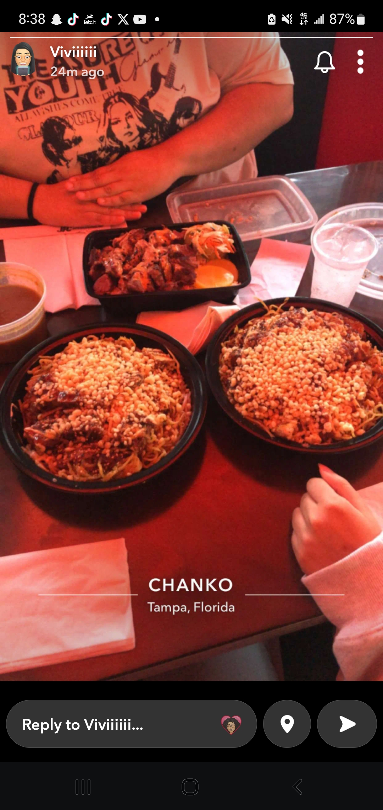
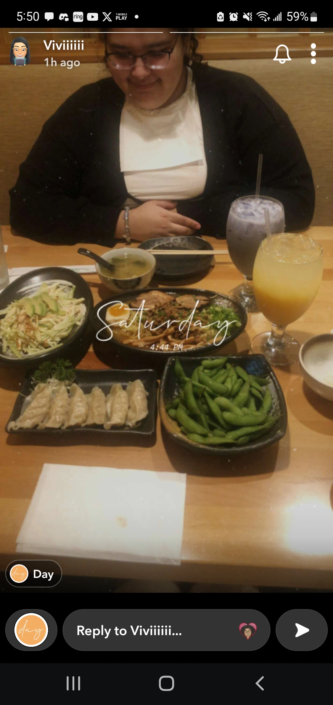
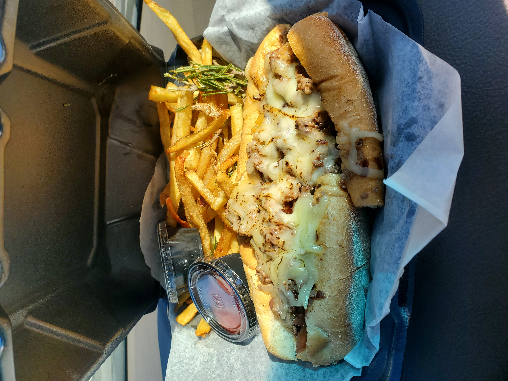
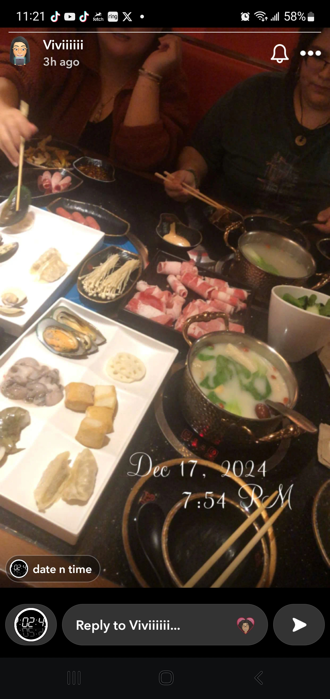
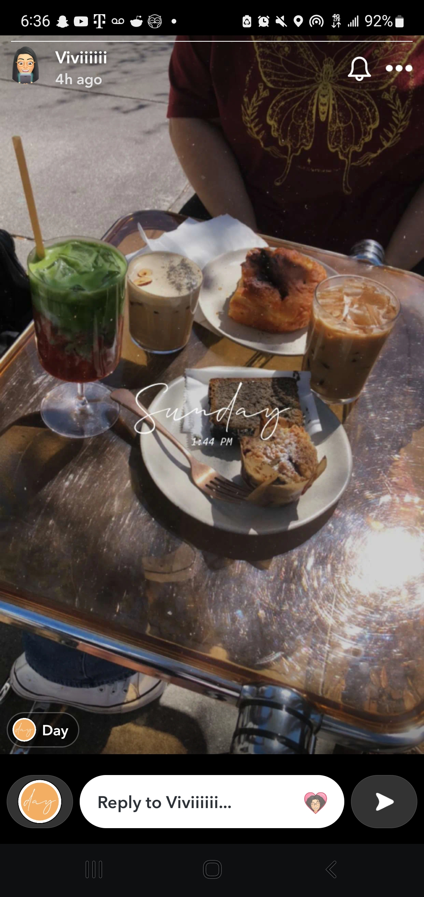
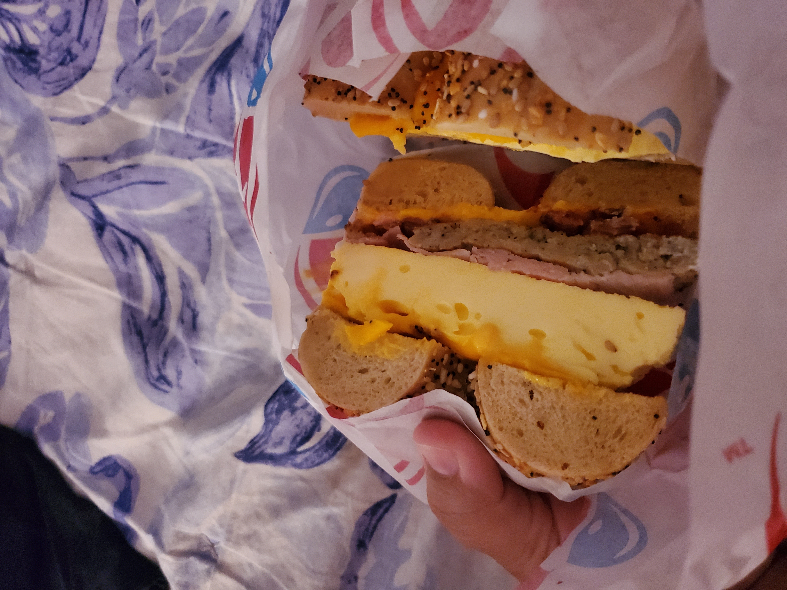

Restaurant Favorites
My friends and I love finding new places to explore with new food to try and these are some of my personal favorites!
Chanko
As featured in my home page, Chanko has been one of my latest restaurant obsessions. Since they're situated in Seminole Heights, they are a ways away from me but they are absolutely worth the drive. I have literal dreams about their Hiroshima Okonomiyaki and even their rice plates are divine and that smoked tofu??? SOOO GOOD! Not only is the food fantastic and a huge portion, the restaurant itself is really cool! It has a retro 50s diner look and the interior meshed that with a japanese izakaya influence. Such a cool place and even though we have only been a couple times, it has been worth it each time. The locale has a lot of cool new restaurants I want to try too they are revamping the area a lot its very artsy and nice.
Michi Ramen & Sushi
A solid Asian food spot when we're in the mood for Japanese food. My friends and I go here often and we always know exactly what we're getting: Gyoza, Edamame, maybe Takoyaki and Tsukkumen, which is shown in the photo its a cold noodle with broth on the side and I always eat the century egg and one of the pork slices. I love the flavor of the noodles I gotta find a recipe. Fun fact, the photo above is actually the most recent time I went went back in July to celebrate my friend Vivi graduating with a Nursing Bachelors (GO VIVI!). Her dad payed so we ended up splurging with some milk teas hehe but yeah great time with good food and great company!
Uptown Scratch Kitchen
This is one of the more unique places of the list here since this was a place we tried in this random food truck area connected to the pier in St Augustine so this isn't a place I can very easily visit which is a SHAME because these rosemary garlic fries had me daydreaming about them for like a month. They were freshly cut and fried french fries and I guess they were fried together with garlic cloves and fresh rosemary, and I LOVE rosemary, so this was spectacular. Though, also pictured, might have been the best philly cheesesteak I've ever had. OH and the spicy ranch that came with the fries I could've drinken it, I just wish they had given me more. If given the opportunity, would 100% go again.
K-pot Hot pot and K-bbq
My friends and I get hot pot pretty often (unfortunate for my wallet lol) and this was a new place we went to since its a bit farther away from me all the way in Brandon and I really liked it! Honestly, new favorite for hot pot I loved the set up where you basically choose all the veggies and the meats you want yourself unlike other places where you order it in portions. Also the had a fried food section that I ended up snacking on them crab rangoons as if it was the last thing I'd ever do. Oh and the hot pot base I chose, I forget the name I think its like the healthy herbs one? Something like that but the taste was so delectable I was scouring reddit for the recipe, at one point! Finally, they sell this thing called Dessert soup and it had snow fungus and an assortment of jellies and it was one of my favorite things to eat the jelly texture was a lot of fun and a unqique sweet treat to have.
Daycation
Of all the cafe's my friends and I have tried, I might have to rank this place as #1. A true asian inspired cafe and their drinks are so unique and good of course! Their matcha is fantastic and this coming from someone who is not the biggest fan and my friend, who IS a matcha connisuer, gave it a 9.5/10 so that tells me everything. Although that black sesame cake slice was underwhelming for being dry, I still think about recreating their Chili crisp Foccaccia bread and eat it with some whipped honey butter OOO I am salivating writing this. Next time we're in St Pete we are for sure coming to try their new drinks!
Brooklyn Water Bagel
I mean, just look at that massive bagel sandwich the picture speaks for itself AND this was through doordash so I imagine it freshly made and warm would be phenomenal. This was their breakfast sandwich called The Brooklyn that I ordered with an Everything bagel, american cheese, eggs, bacon, sausage, and ham. Genuinely, everything I could ever want in a bagel sandwich and their bagels are great too! And you could tell it was a fresh bagel cause 5 minutes past their good eating time, I feel like my jaw dislocates tyring to eat a bagel and this, of course, did not happen here. Haven't had it in forever but during the pandemic years when I was abusing doordash, this was a favorite of mine. I have some of their leftover bagels in the freezer right now, funnily enough, but I'd love to go to the store and buy a sandwich there. Here's to convincing my mom to get one with me!